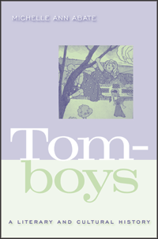

<body bgcolor="#FFFFFF" text="#000000" link="#0000FF" vlink="#CC0000" alink="#CC0000"><center><hr width="350" size="1" align="center" noshade>The history of the shifting image of the tomboy in popular culture<hr width="350" size="1" align="center" noshade><p><a href="https://cdcshoppingcart.uchicago.edu/Cart/ChicagoBook.aspx?ISBN=9781592137220&&PRESS=temple" target="_top">Buy this book!</a> | <a href="https://cdcshoppingcart.uchicago.edu/Cart/Cart.aspx?PRESS=temple" target="_top">View Cart</a> | <a href="https://cdcshoppingcart.uchicago.edu/Cart/Cart.aspx?PRESS=temple" target="_top">Check Out</a></p><p></p></center><!--none//--><h1>Tomboys</h1>
<H2>A Literary and Cultural History</H2>
<h3>Michelle Ann Abate</h3>
<P>cloth 1592137229 $70.50, Jul 08, <FONT COLOR=#990033>Available</FONT>
<br>paper 1592137237 $32.95, <FONT COLOR=#990033>Available</FONT>
<br>Electronic Book 1592137245 $32.95 <FONT COLOR=#990033>Available</FONT>
<BR> 338 pp
6x9
10&nbsp;halftones
</P><BLOCKQUOTE><I>"An ambitious and exciting book that examines representations of what could be considered tomboys, in U.S. fiction and film, since 1859. The scope is impressive: Abate has done a great deal of archival research to unearth the titles she examines and cites many relevant theoretical and critical texts."</I>
<br>&#151<b>Beverly Lyon Clark</b>, Wheaton College</I></BLOCKQUOTE>
<p>Starting with the figure of a bold, boisterous girl in the mid-nineteenth century and ending with the “girl power” movement of the 1990s, <i>Tomboys</i> is the first full-length critical study of this gender-bending code of female conduct. Michelle Abate uncovers the origins, charts the trajectory, and traces the literary and cultural transformations that the concept of “tomboy” has undergone in the United States. Abate focuses on literature including Louisa May Alcott’s <i>Little Women</i> and Carson McCullers’s <i>The Member of the Wedding</i> and films such as Peter Bogdanovich’s <i>Paper Moon</i>. She also draws on lesser-known texts like E.D.E.N. Southworth’s once wildly popular 1859 novel <i>The Hidden Hand</i>, Cold War lesbian pulp fiction, and New Queer Cinema from the 1990s.
<p><i>Tomboys</i> also explores the gender and sexual dynamics of tomboyism, and offers intriguing discussions of race and ethnicity’s role in the construction of the enduring cultural archetype. Abate’s insightful analysis provides useful, thought-provoking connections between different literary works and eras. The result demystifies this cultural phenomenon and challenges readers to consider tomboys in a whole new light.
<BR>&nbsp;<h2>Excerpt</h2><P>Excerpt available at <a href="http://www.temple.edu/tempress">www.temple.edu/tempress</a></p>
<BR>&nbsp;<h2>Reviews</h2>
<p><i>"</i>Tomboys<i> is well-written, grounded in detail from a broad range of texts, and engaging. This is a smart and insightful analysis of American literature, history and culture. Abate juxtaposes texts creatively and convincingly and provides useful, thought-provoking connections between different literary texts and eras. I expect it to inspire important, continuing conversations about history, race, and culture."</i><br> <b>&#151Anne Phillips</b>, Kansas State University
<p><i>"The author provides a detailed look at the dynamic trajectory of the tomboy 'code of conduct' in popular literature, pulp fiction, and Hollywood film....Abate suggests that the dynamic evolution of the tomboy represents wider social and cultural debates within the US."</i> <br>&#151<b><i>Choice</i></b>
<p><i>"Michelle Ann Abate’s new work on tomboys across US history and culture is a thoughtful and broadly applicable contribution to the field of children’s literature…. [She] creates a useful history on which to hang further analyses of girls’ culture…. One of the most elegant exercises in this book full of elegant writing is Abate’s dovetailing of the subversive and complicit aspects of tomboyism…. </i>Tomboys<i> is a bracingly honest look at the successes and failures of one aspect of girls’ culture over the bulk of US history."</i> <br>&#151<b><i>Children’s Literature</i></b>
<BR>&nbsp;<h2>Contents</h2><P>
<br>Acknowledgements
<br>Introduction: From Antebellum Hoyden to Millennial Girl Power; The Unwritten History (and Hidden History) of Tomboyism in the United States
<br>1. The White Tomboy Launches a Gender Backlash: E.D.E.N. Southworth's <i>The Hidden Hand</i>
<br>2. The Tomboy Becomes a Cultural Phenomenon: Louisa May Alcott's <i>Little Women</i>
<br>3. The Tomboy Matures Into the New Woman: Sarah Orne Jewett's <i>A Country Doctor</i>
<br>4. The Tomboy is Reinvented an the Exercise Enthusiast: Charlotte Perkins Gilman's <i>Herland</i>
<br>5. The Tomboy Becomes the All-Americanizing Girl: Willa Cather's <i>O Pioneers!</i> and <i>My Antonia</i>
<br>6. The Tomboy Shifts From Feminist to Flapper: Clara Bow in Victor Fleming's <i>Hula</i>
<br>7. The Tomboy Turns Freakishly Queer and Queerly Freakish: Carson McCullers's <i>The Member of the Wedding</i>
<br>8. The Tomboy Becomes the "Odd Girl Out": Ann Bannon's <i>Women in the Shadows</i>
<br>9. The Tomboy Returns to Hollywood: Tatum O'Neal in Peter Bogdanovich's <i>Paper Moon</i>
<br>Selected Bibliography
<br>Works Cited
<br>Index
<br>Photographs follow page 144
</P><BR>&nbsp;<H2>About the Author(s)</H2>
<table><tr><td valign="top"><img src="/tempress/authors/1940_au.gif" height="90" width="75"></td><td width="100%" valign="middle"><p><b>Michelle Ann Abate</b> is an Assistant Professor of English at Hollins University.</P></td></tr></table>
<BR><H2>Subject Categories</H2>
<p><A HREF="/tempress/cultural.html" TARGET="_top">Cultural Studies</a>
<BR><A HREF="/tempress/literature.html" TARGET="_top">Literature and Drama</a>
<BR><A HREF="/tempress/gender.html" TARGET="_top">Gender Studies</a>
</p>
<p align="center"><a href="https://cdcshoppingcart.uchicago.edu/Cart/ChicagoBook.aspx?ISBN=9781592137220&&PRESS=temple" target="_top">Buy this book!</a> | <a href="https://cdcshoppingcart.uchicago.edu/Cart/Cart.aspx?PRESS=temple" target="_top">View Cart</a> | <a href="https://cdcshoppingcart.uchicago.edu/Cart/Cart.aspx?PRESS=temple" target="_top">Check Out</a></p><p><font face="Arial" size="1"><a href="copyright.html" onMouseOver="window.status='Web Copyright Policy';return true;" onMouseOut="window.status=''" title="Web Copyright Policy">&copy;</a> 2015 <a href="http://www.temple.edu" target="new" onMouseOver="window.status='Link to Temple University home page';return true;" onMouseOut="window.status=''" title="Link to Temple University home page">Temple University</a>. All Rights Reserved. http://www.temple.edu/tempress/titles/1940_reg.html</font></p>